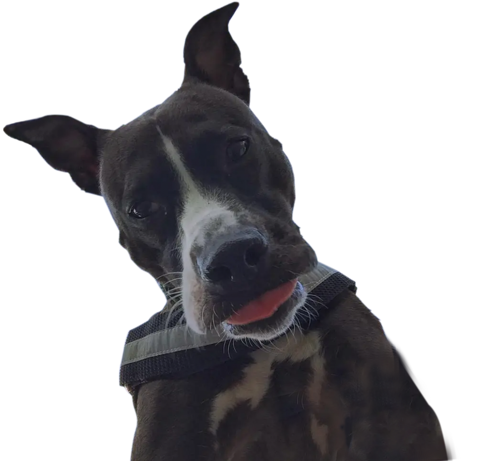

Doggy Daycare in Quincy, MA

Loving care and fun filled days for your most precious companions
At Seaside K9s, your dog will have a blast playing in our spacious backyard, as well as visiting local beaches and trails. All furry guests get lots of socialization with other dogs as well as love, attention, and cuddles! Rest easy knowing your dog will come home safe, tired, and happy!
Let's Play All Day!
At Seaside K9s, all dogs get plenty of exercise and fresh air. We spend most of our days romping around in our yard which has hygienic animal friendly turf. We believe that a tired pup is a happy,and better behaved, pup. Therefore, we incorporate structured walks, socialization, and food puzzles into all stays.
Your best friend deserves the best care!
We are a small family owned business, with a true love for animals. Together, we have over 15 years of experience in canine care, both personal and professional. We have experience with all different breeds, ages, animals with special needs, medication administration, and are certified in animal first aid and CPR. Your pup will always be supervised and we love sending photo and video updates during any stay.